This guide exists because the difference between a fair price and a cheated one — between a good bunch and a rejectable one — lives in the field, at the moment of weighing, in the eye and the hand of the Field Officer.
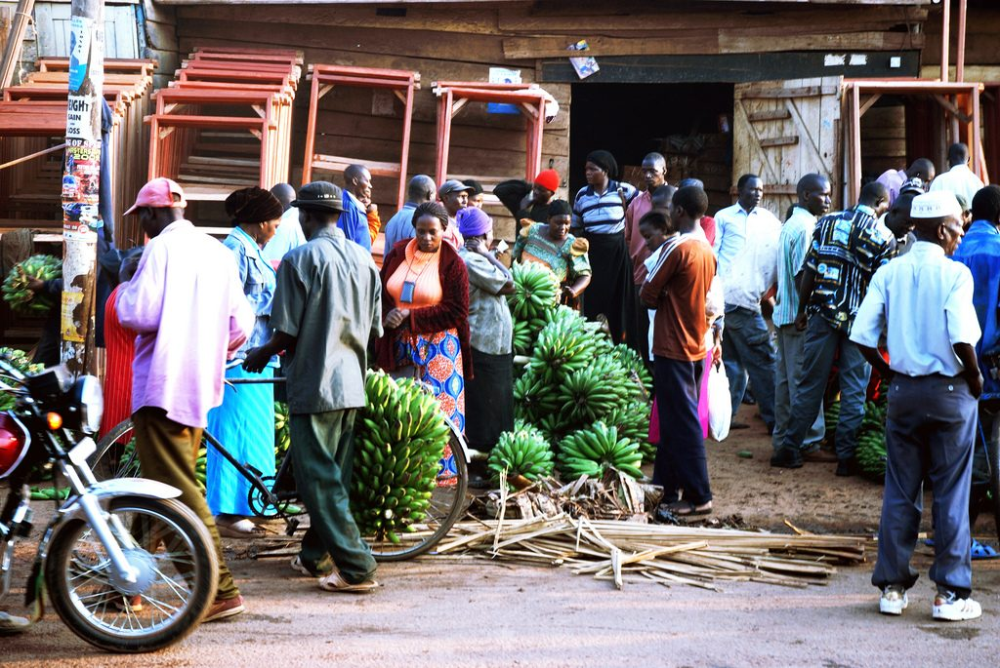
The Plantain Outgrowers Portal (POP) buys cooking plantain — False Horn, True Horn, and Rhino Horn (all Musa AAB) — from smallholder outgrowers across our network, then resells into urban wholesale markets. Every kilogram we procure passes through a Field Officer who decides its grade, its price, and whether it moves at all.
That decision has three downstream effects:
So this is not a manual. It is a record of how POP expects a Field Officer to read a bunch, talk to an outgrower, weigh, record, and decide. Read it once before your first procurement. Read it again before your first dispute.
Before each visit. Read the section that matches the task — pricing band, shrinkage rules, defect catalog.
During the visit. Keep the tear-off quick card on the last page in your pocket.
After the visit. Use the rejection language in Section 10 if any bunch is refused.
When in doubt. Photo + measure + record. Disputes resolve on data, not memory.
The Field Officer is not a buyer, not a salesperson, and not a quality inspector who happens to also pay. The role is a single thing: the trusted reader of the bunch, in the outgrower's field, on POP's behalf.
The day's reference price was pulled from the app at 6 am. Your job is to apply it within the ±5% band — not to negotiate the price itself. If the outgrower wants a different price, the answer is "the daily price is what I pay; I can discuss the grade, which moves the price."
Do not adjust a grade to meet a quota. Do not upgrade a B to an A to be polite. If you cannot defend the grade on a photo and a measurement, the grade is wrong.
This outgrower will be selling to POP next month, next season, next year. A bad day at the scale costs more than one bunch's worth of savings. Be firm on grading. Be fair on price. Be polite, always.
When you arrive, you set the tone for the entire visit. Three things happen in the first 30 seconds:
"Jambo, Mama Wanjiku. I'm here for the bunch you signaled." Using the outgrower's name — or asking for it — is the cheapest relationship investment you'll make all week.
"Today's price for Grade A is KES 32/kg. I'll weigh, grade, and pay against that." Outgrowers who know the price in advance trust the transaction. Outgrowers who don't, suspect the transaction.
"I'd like to see the bunches before we start." This is professional, not invasive. It also lets you spot whether the bunches in the signal are the best ones or the worst ones.
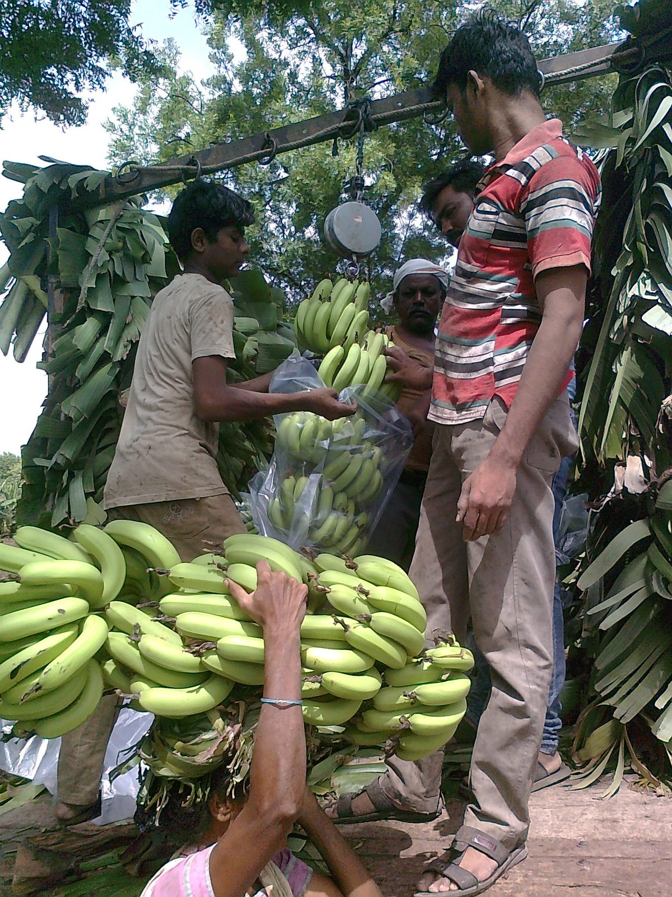
Show up with these. Anything missing is a procurement that doesn't happen.
| Check | Why |
|---|---|
| Scale zeros at 0.000 kg with no load | Prevents systematic 200 g over-read |
| Reference weight (e.g., 10 kg) reads within ±50 g | Calibration drift happens in transit |
| Phone has signal at the first two farms | If not, fall back to offline form |
| Cash float for spot payments (≤ KES 5,000) | M-Pesa is preferred; cash is the fallback |
| Vehicle fuel ≥ half tank | Stranded FO = stranded bunches |
A procurement visit has six steps. Most take under 90 minutes total. The order matters — re-ordering them is how disputes happen.
First 30 seconds — see Section 1. Name. Price. Permission to walk the field.
Confirm what the outgrower signaled. Note any that look diseased, over-mature, or damaged. These are flagged for closer inspection later.
Don't grade from outside the bunch. For every 5 bunches, cut one open and check finger condition. Disease hides inside.
Use the threshold table in Section 6. Tie a colored tag: green = A, yellow = B, red = C, white = reject. The tag stays with the bunch to the depot.
Net weight = gross − tare. Record in the app. Photograph the bunch on the scale, showing the weight reading.
M-Pesa first, cash fallback. Outgrower signs (or thumbprints) the form. Confirm pickup time. Load carefully — no drops, no crush.
A freshly cut bunch bleeds 2–4% of its mass as latex within the first 30 minutes. Always weigh after drainage, never before. If you weigh immediately, you will pay for water that won't be in the bunch at the depot — and shrinkage will trigger on a perfectly fine load.
POP procures three varieties of cooking plantain: False Horn, True Horn, and Rhino Horn. All are Musa AAB genome, all cook green, all are staples across East and West Africa. They are not interchangeable — the bunch shape, finger length, finger girth, and market price differ. Mixing them silently is how grading errors and outgrower disputes both start.
Grade within a variety. Never compare a False Horn finger to a True Horn finger on the same ruler. Each variety has its own threshold table — see Section 6.
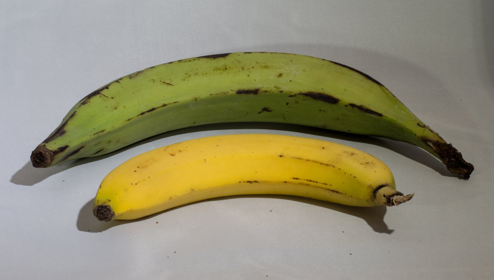
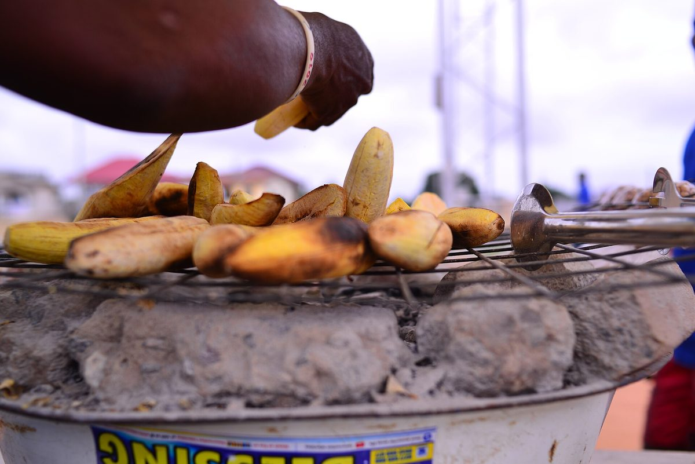
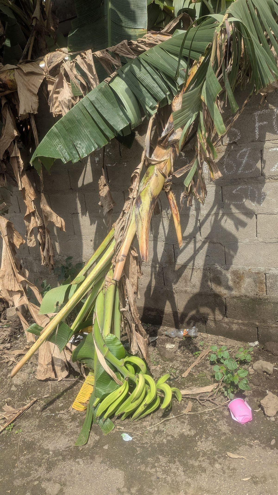
| Trait | False Horn (French) | True Horn | Rhino Horn |
|---|---|---|---|
| Hands per bunch | 5–8 hands + a final incomplete "horn" of 1–4 fingers | 5–8 hands + a true horn of 1–2 fingers | 6–10 hands + a single small terminal finger (rare) |
| Finger length | 15–25 cm (medium) | 10–18 cm (shorter, slimmer) | 25–35 cm (longest of the three) |
| Finger girth | Thickest (fattest) | Medium | Thick (slightly curved) |
| Bunch weight | 15–30 kg typical | 8–15 kg typical | 20–40 kg (heaviest) |
| Plant height | Standard (3–4 m) | Standard (3–4 m) | Tall (4–5 m, hence the name) |
| Market premium | Reference (baseline) | +5–10% | +15–25% (top tier) |
| Diagnostic trait | Long male flower stalk extends past last hand | Bunch tapers to a small single-finger horn | Visibly the largest, longest fingers; tallest plant |
| Look for | Big "fist" of fingers with one trailing horn | Smaller, more uniform, slimmer horn | Very long plump fingers; the bunch needs two hands to lift |
A young False Horn, with the horn not yet emerged, can look like a True Horn. Always check the crown of the bunch — if a small bud is visible where a final hand is forming, it is False Horn. If the bud is a single finger or absent, it is True Horn. Rhino Horn is rarely misidentified: the finger length alone (25 cm+) is the giveaway, and the plant itself stands taller than any FH/TH in the field.
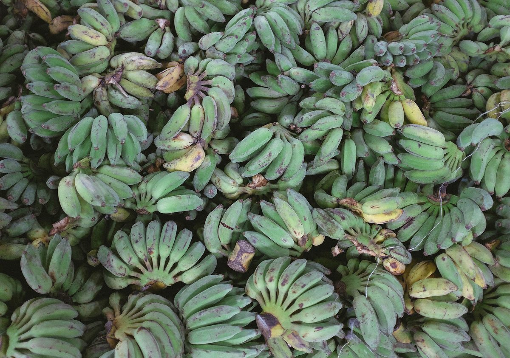
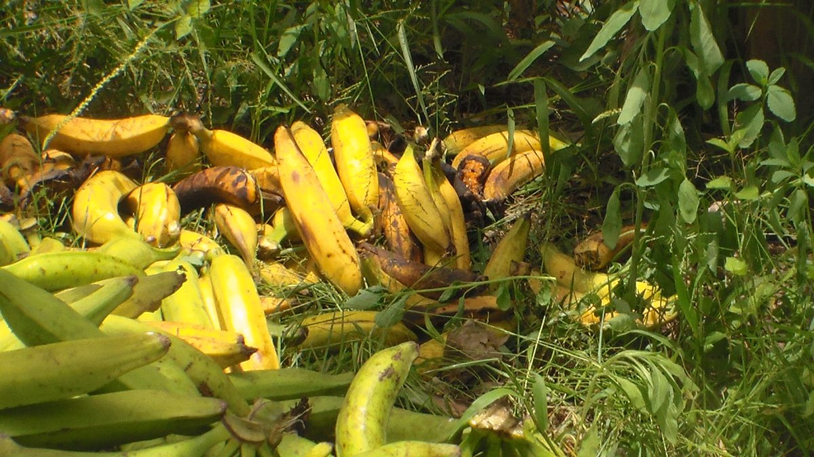
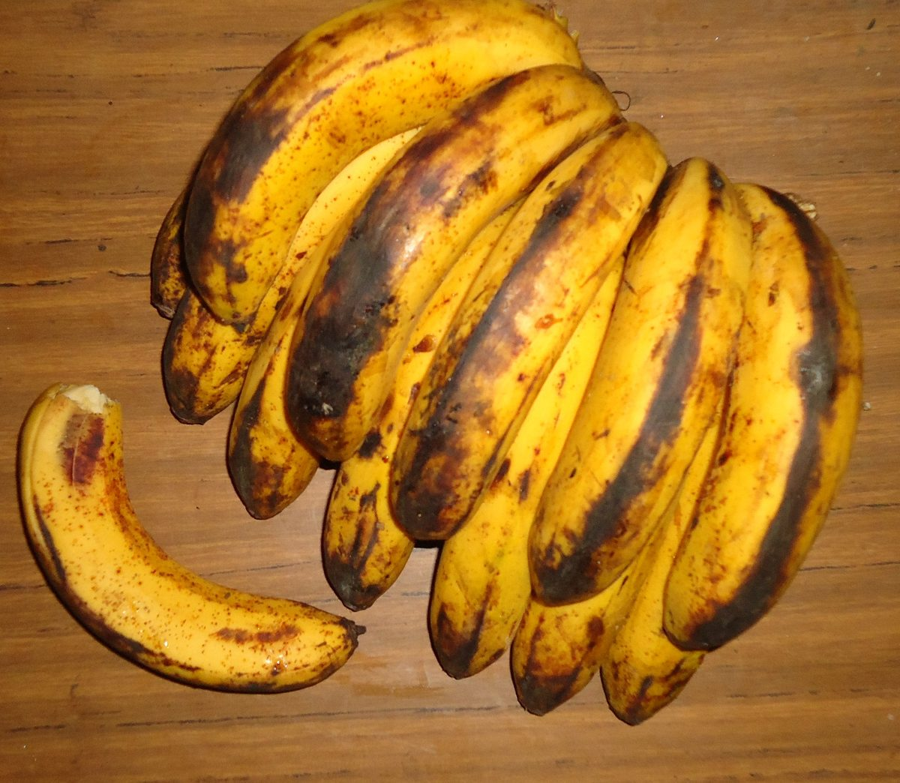
Maturity is graded on a 9-stage scale defined by peel color, finger firmness, and starch content. POP procures at Stages 1–2 (green mature) only. Stage 3+ is for ripening rooms and direct retail — not procurement.
| Stage | Peel color | Finger feel | Procurement? |
|---|---|---|---|
| 1 — Green mature | Dark green, no yellow | Hard, no give | ✅ Buy |
| 2 — Green turning | Green with first yellow tinge at ridges | Hard, slight give at stem end | ✅ Buy (premium) |
| 3 — Yellowing | More yellow than green | Softening, easy to peel | ⚠️ Reject (ripening, not procurement) |
| 4 — Yellow with black spots | Yellow dominant, brown flecks | Soft, finger feels "ripe" | ❌ Reject |
| 5+ — Black ripe → overripe | Black or split peel | Yielding, smell sweet | ❌ Reject (retail / cooking loss) |
A plantain harvested at Stage 3 will ripen to black in 3–5 days at ambient. By the time it reaches the wholesale floor it is unsellable — and shrinkage flags a load that looked fine at intake. Stage 1–2 fruit gives us 7–10 days of usable life at room temperature.
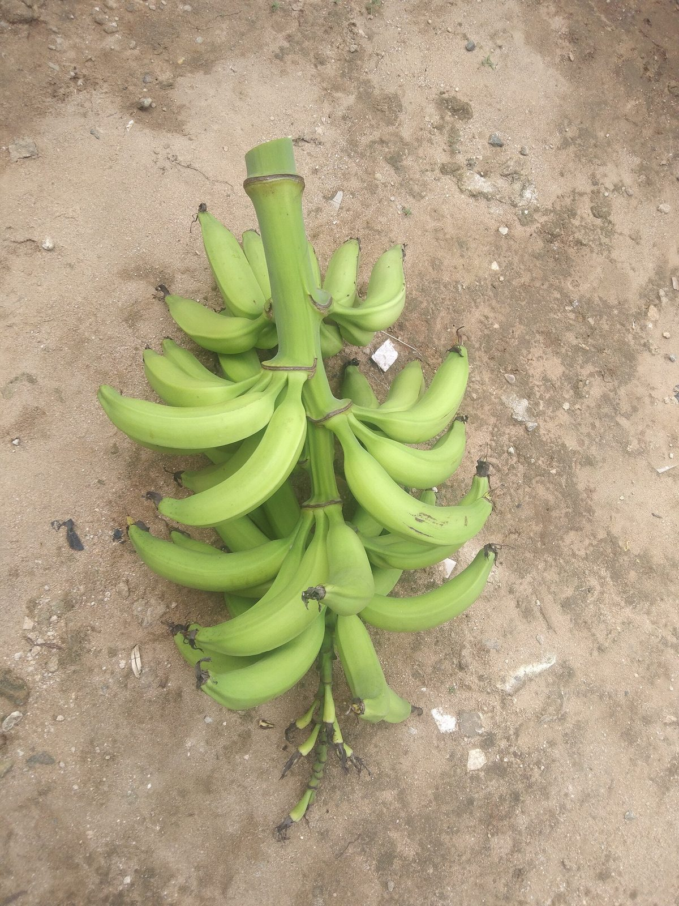
| Grade | False Horn bunch | True Horn bunch | Rhino Horn bunch | Finger condition | Price vs. reference |
|---|---|---|---|---|---|
| A — Premium | ≥ 20 kg | ≥ 12 kg | ≥ 25 kg | Finger ≥ 20 cm (FH) / ≥ 25 cm (TH) / ≥ 30 cm (RH); clean, no defects | Reference (100%) |
| B — Standard | 12–20 kg | 8–12 kg | 15–25 kg | Finger 15–20 cm (FH) / 20–25 cm (TH) / 25–30 cm (RH); minor cosmetic only | −5% |
| C — Lower / process | < 12 kg | < 8 kg | < 15 kg | Finger < 15 cm (FH) / < 20 cm (TH) / < 25 cm (RH); visible defects OK, no disease | −10% to −15% |
| Reject | Any weight | Any weight | Any weight | Disease (BSV, sigatoka, weevil), stage 3+, severe damage, rot | No payment |
False Horn: reference (baseline). True Horn: +5–10% (restaurant & frying trade). Rhino Horn: +15–25% (top-tier restaurant & export). Example: Rhino Horn Grade A at +20% premium, KES 32 base → KES 38.40/kg. Premium is applied to the grade-adjusted price, not the base.
For each bunch, ask four questions in order. The first "no" stops the grade from going higher.
Disease? Pest? Stage 3+? Rot? Severe mechanical damage? If yes → Reject. Stop here.
Use the variety-specific threshold (FH / TH / RH). If the bunch is below B weight for its variety, it is Grade C.
Sample 3 fingers from the top, middle, and bottom hand. Measure along the outer curve. If any finger falls short, downgrade one grade.
Use the defect catalog in Section 7. Count and assess. Cosmetic alone stays A. Functional defects (latex, scarring affecting the peel) drop to B. Multiple defects → C.
A single load meeting or exceeding 200 kg of Grade A equivalent (where A=1.0, B=0.95, C=0.85, reject=0) triggers a +5% bonus on the load total. Apply it on the form, not the per-bunch calculation.
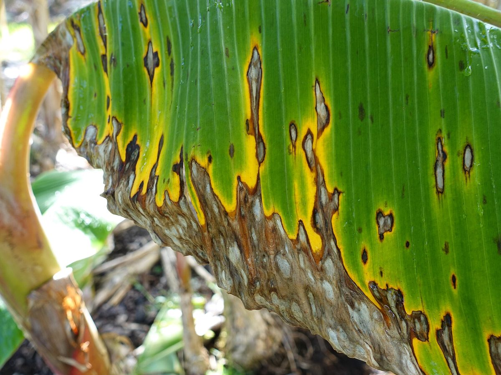
Symptoms: Black streaking on peel, premature ripening in patches, leaf streaks visible in field.
Action: Reject the bunch. Photograph the leaf and the finger. Reject all fruit from that mat for the visit.
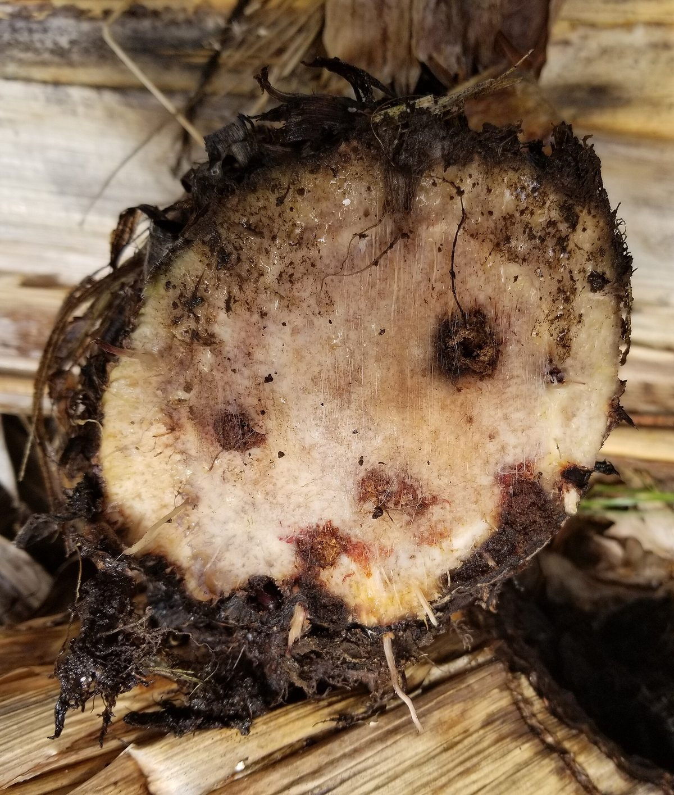
Symptoms: Tunnels in the corm, weakened stem, finger separation at the crown.
Action: Reject. Mark the mat for the supervisor's follow-up — weevil spreads.
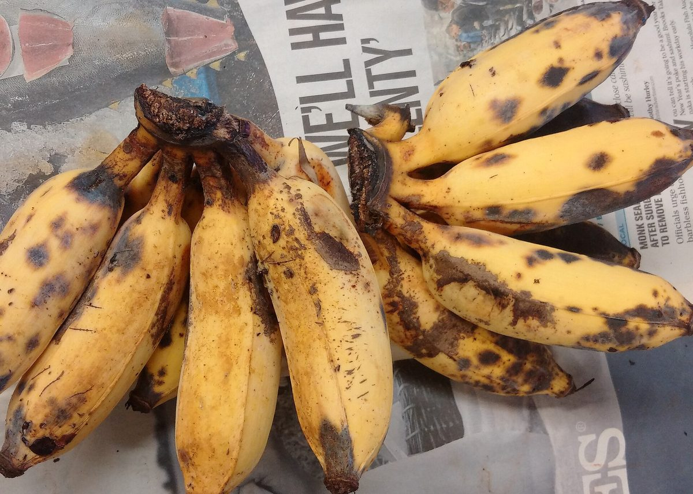
Symptoms: Black soft rot at the crown, fingers detaching, dark lesions.
Action: Reject. Most common cause of whole-load loss at the depot.
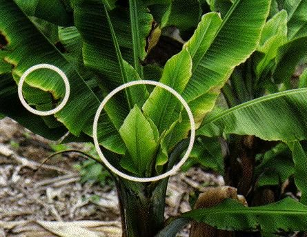
Symptoms: Stunted, narrow leaves in field; small, misshapen fingers.
Action: Reject. Report the mat to the supervisor — viral diseases are notifiable.
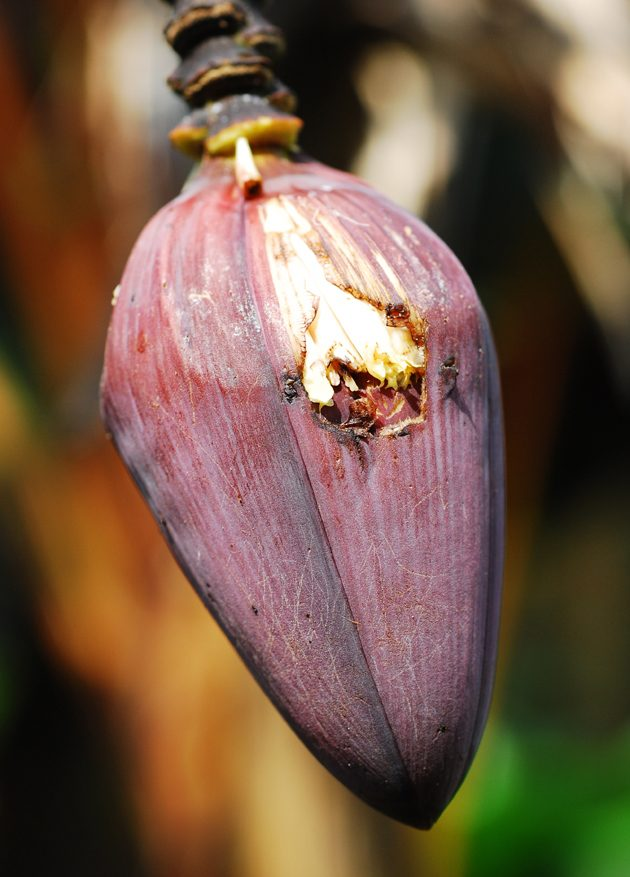
Symptoms: Thrips scarring, raised silvery-brown corky patches on peel, surface scratches.
Action: B if isolated. C if pervasive. Not a reject — purely cosmetic.
Symptoms: Yellow peel, black spotting, finger feels soft, ripening has begun.
Action: Reject. Cannot be stored or shipped. Different market (immediate retail).
Symptoms: Black-brown stains on fingers from sap oxidizing on the peel after cutting.
Action: Cosmetic only if surface. Reject if staining covers >30% of any finger.
Symptoms: Bruising, cuts, finger separation, broken crown, undersized bunch.
Action: B if minor. C if multiple fingers affected or bunch <12 kg FH.
Pricing is set in the app, refreshed daily. Your role is to apply it. The only lever a Field Officer controls is the grade.
Today's reference price for False Horn Grade A is, say, KES 32/kg. You may pay anywhere from KES 30.40 to KES 33.60 — that is the field band. Above the band requires supervisor approval. Below the band is treated as a special concession and flagged in the form.
| Scenario | Action |
|---|---|
| Outgrower offers load well above Grade A, all clean | Pay the band top (+5%), note as "premium load" on form |
| Outgrower offers load mixed A/B/C | Weigh and grade each bunch, no negotiation on the per-kg rate |
| Outgrower demands above-band rate | Refer to supervisor in-app. Do not exceed band in the field. |
| Outgrower offers below-band rate to clear stock | Acceptable up to 5% below. Document the reason (e.g., "clearing pre-mature stock"). |
Outgrower: Mama Wanjiku, Kapsabet zone. Signal: 5 bunches, ~110 kg.
Reference (today): False Horn Grade A = KES 32/kg. True Horn premium +5%. Rhino Horn premium +20%.
| Bunch | Variety | Weight | Grade | Rate | Value |
|---|---|---|---|---|---|
| 1 | False Horn | 22 kg | A | KES 32.00 | KES 704.00 |
| 2 | False Horn | 18 kg | B | KES 30.40 (−5%) | KES 547.20 |
| 3 | True Horn | 11 kg | A | KES 33.60 (+5%) | KES 369.60 |
| 4 | False Horn | 9 kg | C | KES 28.80 (−10%) | KES 259.20 |
| 5 | Rhino Horn | 28 kg | A | KES 38.40 (+20%) | KES 1,075.20 |
| Total | 88 kg | KES 2,955.20 |
88 kg does not meet the 200 kg Grade A-equivalent threshold for the volume bonus, so the +5% bonus does not apply. If the load had been 200 kg at 95% Grade A equivalent, the bonus would be 5% × KES 6,400 = KES 320 extra. Note that Rhino Horn's 28 kg contributes a lot of value per kg — that is by design, the premium is what makes it worth chasing the variety.
Always subtract. The sling + hook + any packaging you used to suspend the bunch. Write the tare on the sling in marker so it stays with the scale.
Shrinkage is the difference between the weight you recorded at the farm and the weight at the depot, expressed as a percentage. Normal range: 0–3% (latex loss, handling). Above 5% triggers an investigation.
| Shrinkage | Likely cause | Action |
|---|---|---|
| 0–2% | Normal latex drainage | None — record the actual weight |
| 2–5% | Some weight loss in transit | Note the cause on the form (heat, time, handling) |
| 5–8% | Excessive drainage or partial ripeness | Flag for supervisor review. Was the grade correct? |
| > 8% | Likely Stage 3+ at intake, or rough handling | Investigate. May require a field re-training for the FO. |
Rejections will happen. The way they are handled determines whether the outgrower comes back.
| Level | Trigger | Who to call | When |
|---|---|---|---|
| 1 | Outgrower disputes a single grade | Field Officer, in the field | On the spot, with photo evidence |
| 2 | Outgrower refuses all load | Field Supervisor (call) | Within 1 hour of leaving farm |
| 3 | Outgrower alleges FO misconduct | Field Supervisor + HR note | Same day, written report |
| 4 | Suspected disease / pest in field | Field Supervisor + Agronomist | Same day, photo + GPS pin |
| 5 | Safety threat / refusal to leave | Withdraw, call operations | Immediately |
| Grade | FH kg | TH kg | RH kg |
|---|---|---|---|
| A | ≥ 20 | ≥ 12 | ≥ 25 |
| B | 12–20 | 8–12 | 15–25 |
| C | < 12 | < 8 | < 15 |
| Reject | any | any | any |